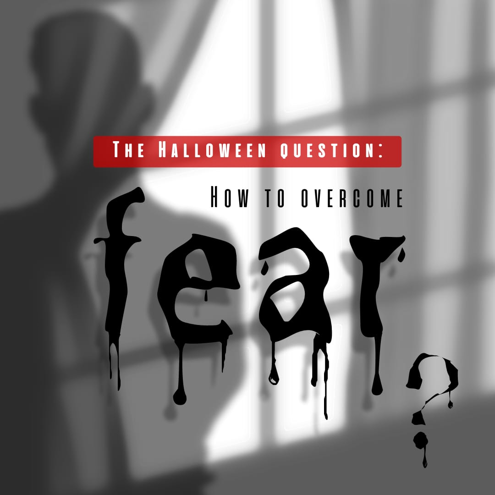

How to overcome fear and become fearless
Introduction
1.1 Fear
We live in fear, not only externally but also internally. External fears like
loss of livelihood, not getting enough to eat, loss of position, ill-treatment
by higher officials remain. We also have a lot of fear internally - fear of not
being able to last, fear of not being successful, fear of death, fear of
loneliness, fear of not being able to find love, fear of utter boredom etc.
2. Overview
So our primary problem, our real and inevitable problem, is to be free from
fear. Do you know what fear does? It darkens the mind, makes it blunt. Fear
breeds violence. Someone is worshiped only because of fear.
3: physical fear - animalistic response
So first comes physical fear which is an animal response. Since we have
inherited a lot from animals, therefore a large part of our brain-structure is
the gift of animals. This is a scientific fact. This is not an opinion, but a
fact. The animal is greedy, it likes to be petted, patted, to live in peace-the
same way humans like it. The animal likes to grab, compete – so does the human
being. Animals like to live in groups – similarly humans like to work in groups.
Animals have their own social structure – so do humans. We could go into more
detail, but this much is enough to see that much of us is still animal.
4: Can we break free from both animal and cultural influences?
So is it possible for us not only to break free from animal influence but to go
further and find out - not just in the form of verbal curiosity but really find
out whether the mind is influenced by that society, by that culture. He can go
beyond the influence of the culture in which he is brought up. It is necessary
to be fearless for the possibility of a situation of a completely different
dimension.
5: Physical fear protecting the body is rational, our problem is mental fear
It is clear that the reaction done for self-defense is not fear. Food, clothing
and shelter – these are the needs of all of us, not only the rich, not only the
elite. This is everyone's need and politicians do not have the solution.
Politicians have divided the world into countries, such as India. These
countries have their own separate sovereign government, their own separate army
and all the toxic idiocy like nationalism. The political problem is only one and
that is to bring about human unity. And that cannot be brought about as long as
you cling to your national or ethnic divisions. Sir, when the house is burning
you don't ask who is bringing the water, you don't ask the hair color of the
person who set the house on fire, you just bring water. Just as religions have
divided men, in the same way nationalism has divided men. This nationalism and
these religious beliefs have alienated man from man, turned each other against
each other and one can see why this is happening. This is happening because we
like to have limited knowledge
So one has to be fearless, but it is one of the most difficult tasks. Most of
the time we are not even aware that we are afraid, nor do we know what we are
afraid of. Even if we become aware that we are afraid, we do not know what to do
then. That's why we start running away from what we are, whereas we are the
fear, and wherever we go by running away, the fear only increases. And
unfortunately we have spread a web of migrations.
6: attention kills fear
When you have such total and total attention, then there is no observer left. It
is the observer who is the source of fear, because it is the observer who is the
center of thought—the 'mine', the 'I', the self, the ego. This observer is
flawed. When there is no thought then it is not even an observer. This state is
not a state of emptiness. This requires a lot of due diligence – that is, one
should never just take things for granted.
7: The root of all fear
Dependence on things, persons and ideas gives rise to fear. Dependence arises
from ignorance, lack of self-realization and inner misery. Bhava becomes a
factor of uncertainty in the mind and brain and this uncertainty becomes a
hindrance in communication and understanding. Through self-awareness, we begin
to discover and understand the cause of fear—not just superficial fear, but also
deep-rooted and cumulative fears. Fear is innate as well as comes from the
outside. It is associated with the past, so it is necessary to understand the
past in order to free thought-feeling from it, and that too through the present,
the past is always eager to give birth to the present which is 'me', 'my' and
'I'. The memory becomes the counterpart of '. This is the root of all fear.